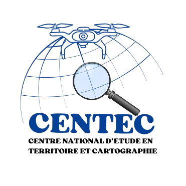

|  | Centre National d'Etude en Territoire et CartographieBienvenue chez CENTEC— votre partenaire de confiance pour la formation et l’accompagnement professionnel en géomatique, en Afrique de l’Ouest. |
| Cartographie | Bonne maitrise |
| SIG | |
| télédétection |